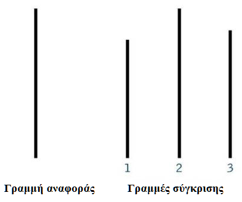

Την εποχή μετά τον Β’ παγκόσμιο πόλεμο πολλοί επιστήμονες προσπάθησαν να μελετήσουν τα αίτια που οδήγησαν απλούς και καθημερινούς πολίτες στο να συμπεριφερθούν με τόσο ακραίο τρόπο και να υποταχθούν στην επιρροή της μάζας ή της εξουσίας.
Μεταξύ άλλων λοιπόν, το 1950 ο κοινωνικός ψυχολόγος Solomon Asch ξεκίνησε μία σειρά από πειράματα για την συμπεριφορά των ανθρώπων υπό κοινωνική πίεση. Στόχος του πειράματος ήταν να διαπιστώσει ο ερευνητής αν το προς μελέτη υποκείμενο θα ενέδιδε στη γνώμη της πλειοψηφίας, ακόμη και όταν αυτή ερχόταν σε ευθεία αντίθεση με αυτό που τα μάτια του μαρτυρούσαν.
Κάθε συμμετέχων τοποθετήθηκε σε μια ομάδα 5-7 «συνεργατών» (ανθρώπων δηλαδή που γνώριζαν τον πραγματικό σκοπό του πειράματος, αλλά αυτοσυστήθηκαν ως απλοί συμμετέχοντες).
Στους συμμετέχοντες παρουσιάστηκε μια κάρτα με μια γραμμή, ακολουθούμενη από μια άλλη κάρτα με 3 γραμμές, (1), (2) και (3). Από τους συμμετέχοντες, ζητήθηκε να πουν ποια γραμμή από τις τρεις ταίριαζε σε μήκος με τη γραμμή αναφοράς (βλέπε εικόνα).

Ο «πραγματικός» συμμετέχων απαντούσε κατά σειρά τελευταίος ή προτελευταίος, αφού πρώτα είχε ακούσει τους συνεργάτες να δίνουν όλοι την ίδια λανθασμένη απάντηση.
Με έκπληξη λοιπόν ο ερευνητής διαπίστωσε ότι το 37% των εθελοντών ενέδιδαν στη γνώμη της πλειοψηφίας, παρόλο που η απάντηση ήταν ξεκάθαρα λανθασμένη. Σε προσωπική συνέντευξη που ακολούθησε, φάνηκε ότι οι συμμετέχοντες ενέδιδαν για 2 διαφορετικούς λόγους:
Κάποιοι ειλικρινά πίστεψαν ότι η υπόλοιπη ομάδα είχε δίκιο και για αυτό ασπάστηκαν τη γνώμη τους.
Άλλοι ήξεραν πως οι υπόλοιποι συμμετέχοντες είχαν άδικο αλλά δεν θέλησαν να διαφοροποιήσουν τη θέση τους φοβούμενοι τον κοινωνικό αποκλεισμό και χλευασμό των υπολοίπων.
Το κοινωνικό λοιπόν αυτό πείραμα και τα αντίστοιχα συμπεράσματα μας δίνουν μεγάλα πνευματικά μαθήματα και φωτίζουν αλήθειες που είναι γραμμένες μέσα στον αψευδή Λόγο του Θεού χιλιάδες τώρα χρόνια.
Σε έναν κόσμο που δέχεται το ψέμα και απορρίπτει την αλήθεια, που λέει το μαύρο άσπρο και το άσπρο μαύρο, που η αμαρτία βαπτίζεται ελευθερία και ο αγιασμός οπισθοδρομισμός, είναι εύκολο το παιδί του Θεού να επηρεαστεί ή να φοβηθεί να σταθεί στο ύψος των περιστάσεων.
Ο απόστολος Παύλος όμως μας λέει:
«…και μη συμμορφόνεσθε με τον αιώνα τούτον, αλλά μεταμορφόνεσθε διά της ανακαινίσεως του νοός σας, ώστε να δοκιμάζητε τι είναι το θέλημα του Θεού, το αγαθόν και ευάρεστον και τέλειον.» (Ρωμ. 12:2).
Ο Κύριος μας καλεί αυτόν τον έσχατο καιρό να είμαστε «…άμεμπτοι και ακέραιοι, τέκνα Θεού αμώμητα εν μέσω γενεάς σκολιάς και διεστραμμένης, μεταξύ των οποίων λάμπετε ως φωστήρες εν τω κόσμω» (Φιλιππησίους 2:15). Να σταθούμε υπέρ της αληθείας και να υψώσουμε τον Λόγο του Θεού, όποιο και αν είναι το αντίστοιχο κόστος.
Πάντοτε θα υπάρχει η κοινωνική πίεση να συμμορφωθείς. Να μην ξεχωρίζεις από το υπόλοιπο σύνολο. Στο σχολείο να ντύνεσαι όπως και άλλοι. Στο πανεπιστήμιο να ασπαστείς τα αθεϊστικά φιλοσοφικά μηνύματα. Στην ερώτηση: «Πού θα πας όταν πεθάνεις;» να απαντήσεις και εσύ… «μαζί με τους πολλούς». Αλλά ο Θεός «δεν προσδιώρισεν ημάς εις οργήν, αλλ’ εις απόλαυσιν σωτηρίας».
Στάσου λοιπόν όπως ο Δανιήλ μέσα στη Βαβυλώνα που δεν θέλησε να μολυνθεί με τα εδέσματα του ειδωλολάτρη βασιλιά παρόλο που οι συνομήλικοί του ενέδωσαν. Σαν τον Ιωσήφ στην Αίγυπτο που αρνήθηκε την πρόσκληση της γυναίκας του Πετεφρή για την πρόσκαιρη απόλαυση της αμαρτίας.
Και τέλος, μη φοβηθείς να δώσεις τη μαρτυρία του Θεού. Μη φοβηθείς να ξεχωρίσεις υψώνοντας τη σημαία του Χριστού. Την ώρα που όλοι λένε ότι «δεν υπάρχει Θεός» εσύ σήκω και πες ότι τον γνώρισα και είναι αναστημένος!!! Γιατί «όποιος με ομολογήσει έμπροσθεν των ανθρώπων, είπε ο Χριστός, θέλω ομολογήσει και εγώ αυτόν έμπροσθεν του Πατρός μου του εν ουρανοίς»!!!
Στο επόμενο άρθρο θα συνεχίσουμε εξετάζοντας δύο παραλλαγές του πειράματος και τα αντίστοιχα πνευματικά μαθήματα.
Published in the team's column in the newspaper “Christianity”, .